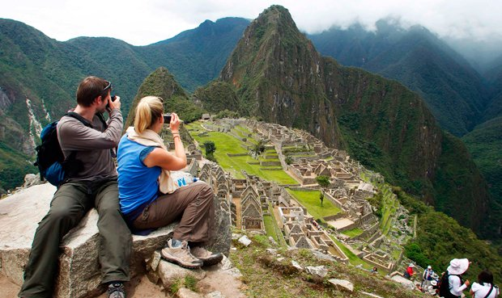
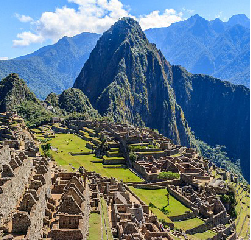
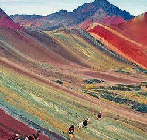
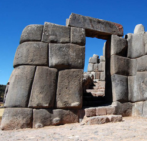
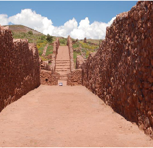

BLOG
Los Misterios de MachuPicchu
Perdida entre la vegetación de la selva peruana, se encuentra una antiquísima ciudadela, el Santuario Histórico de Machu Picchu, un complejo arqueológico que abarca 32,592 hectáreas en la cuenca del río Vilcanota-Urubamba, que era el río sagrado de la población Inca. Un entorno de espectacular belleza natural, en que las ruinas de la ciudadela solo compiten con la cantidad de especies que habitan en la misma. Y allí, donde un día, una lejana civilización habitó, la ingeniería inca dio paso a construcciones que aún hoy sorprenden, y nacieron leyendas y misterios de Machu Picchu que durante siglos han atraído a millones de turista.
Machu Picchu el Refugio de Pachacuteq
Mucho se ha dicho sobre la ciudadela de Machu Picchu, y la misma ha estado desde mucho tiempo en medio de conjeturas e hipótesis que han aumentado el interés por sus supuestos misterios. La región donde se encuentra la ciudadela, ya estaba habitada por algunas tribus andinas alrededor del 760 AC. Pero fue en el 1440 cuando Pachacútec, el noveno gobernante Inca conquistó el lugar y mandó a construir la ciudadela para servirle como destino de veraneo.
Para cuando transcurría el año 1572, época de apogeo del Perú colonial, la que había sido una encantadora y floreciente capital incaica en medio de la selva, ya había sido abandonada y olvidada. La hermosa ciudadela de Machu Picchu se dejaba ganar por la verde vegetación y el silencio del abandono y tendrían que pasar algunos siglos para que fuera descubierta.
Decubrimiento de la capital incaica
No sería hasta los albores del siglo XX, cuando el hombre moderno descubriría la ciudadela de Machu Picchu, alrededor de 1911, cuando Hiram Bingham, un norteamericano profesor de historia, avistó la ciudad gracias a referencias de lugareños. Aquellos también le informaron de la presencia previa de Augusto Berns, que en 1867 explotó con permiso del gobierno peruano la región, extrayendo de la misma una gran cantidad de vestigios arqueológicos.
Una ciudad perdida de los extraterrestres
La cultura popular vio el descubrimiento de una ciudadela, perfectamente concebida a nivel arquitectónico y de ingeniería, y pronto surgieron las leyendas y el misterio alrededor de Machu Picchu. La forma en que la misma había sido construida, con enormes bloques de piedras, en una época en que no existía maquinaria para trasladarlas. Y la forma en que piedra a piedra se hizo la construcción, de una manera tan ajustada y precisa, que aún hoy es imposible intentar colocar algo como una hoja de papel entre las piedras, hizo surgir el mito de una ciudad poblada por extraterrestres en medio de la selva peruana.
Revelado el misterio de Machu Picchu
Hoy se sabe que no hay misterio alguno en la antigua ciudad de los Incas. Como otras culturas prehispánicas, también lograron un gran avance en la arquitectura y la ingeniería, mismo que da cuenta de la construcción de la ciudadela de Machu Picchu, como de otras construcciones en otras regiones de América, donde habitaron toltecas y mayas.
Lo que sí hay que reconocer, es que a su talento como constructores se agregaba una enorme paciencia para trabajar la piedra, ya que antes de unirla al resto del conjunto, y durante largas jornadas y con pequeñas piedras, los incas “achataron” las enormes rocas, dejando superficies planas que encajaron a la perfección para construir lo que es hoy, uno de los sitios más visitados del mundo y un patrimonio cultural de la humanidad.
"Machu Picchu Ombligo del Mundo..."

Hechos para Ti!!



